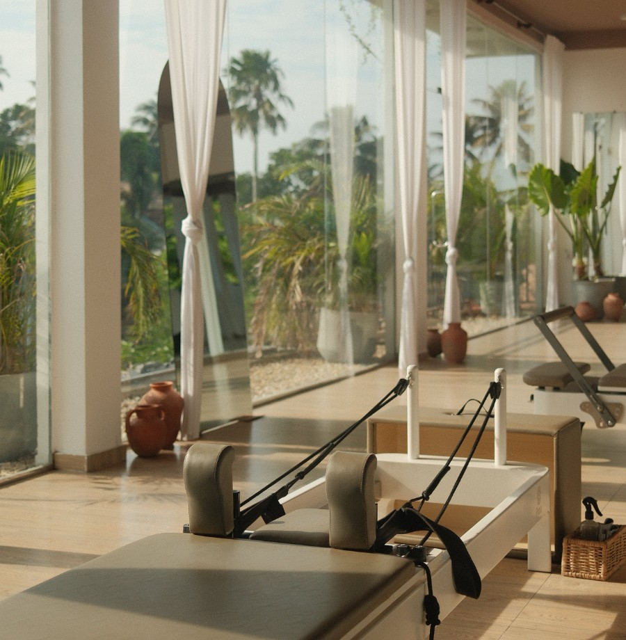

Mat & Reformer Foundations Teacher Training · Ahangama, Sri Lanka
Small cohorts · Real clients · Reformer time from day one
The programme
You leave able to run a room, not just pass a test.
The Mat & Reformer Foundations Teacher Training is a comprehensive course in how to teach Pilates well, run from our boutique studio on Sri Lanka's south coast. You cover the full foundation: anatomy, the mat repertoire, the reformer repertoire, cueing, programming, and how to read a body in front of you. The setting is part of the method. Ahangama is small, the ocean is close, and the pace lets you actually absorb what you are learning instead of cramming it.
From the first week you are on the reformer and on your feet. You observe real classes, then teach them. You work with real clients, not just your fellow trainees, under the eye of instructors who teach here every day. Feedback is direct and immediate. Cohorts are deliberately small, so nobody hides at the back and nobody waits their turn for a machine. By the time you graduate you have logged genuine teaching hours and made the mistakes that matter while someone experienced was standing next to you.
You leave with two things. A recognised foundation certification in mat and reformer Pilates, and the harder thing to find: the confidence and the hours to walk into a studio and teach a class that holds. Graduates of this programme are teachers. The paper just confirms it.
What sets it apart
Who this is for
Cohorts are small and they fill. Reach out to check the next intake dates and reserve your place.
Apply & reserve your placeQuestions first? Email purapilatessrilanka@gmail.com or message us on Instagram @purapilatessrilanka.